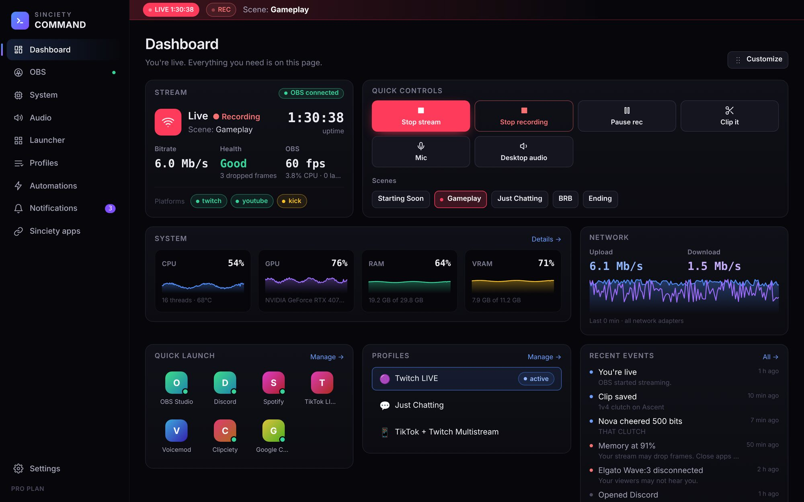
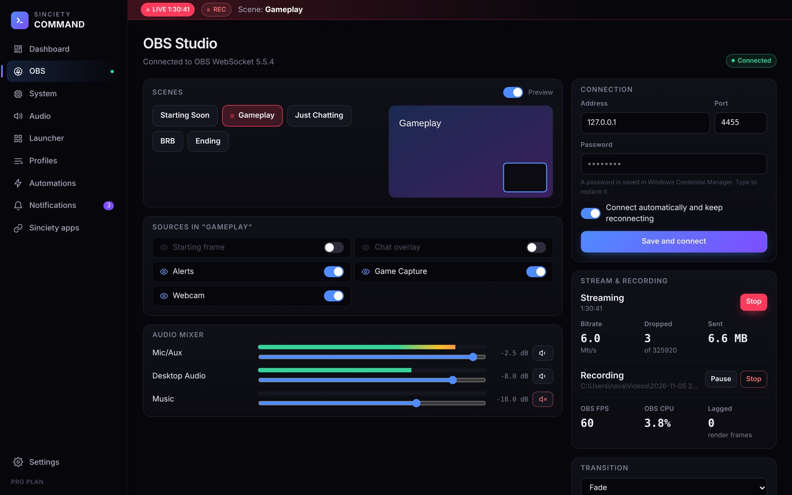
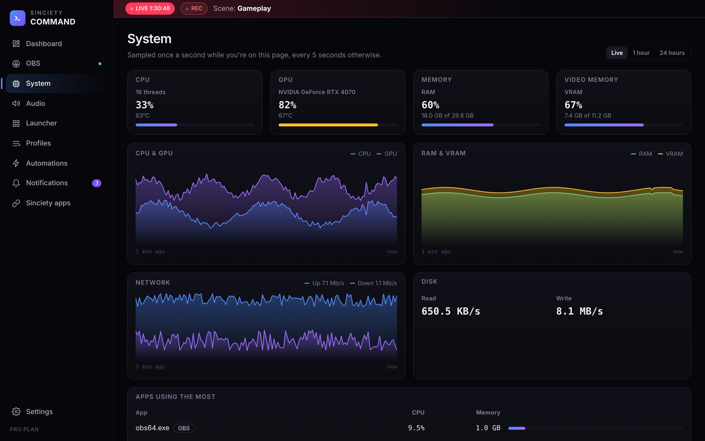
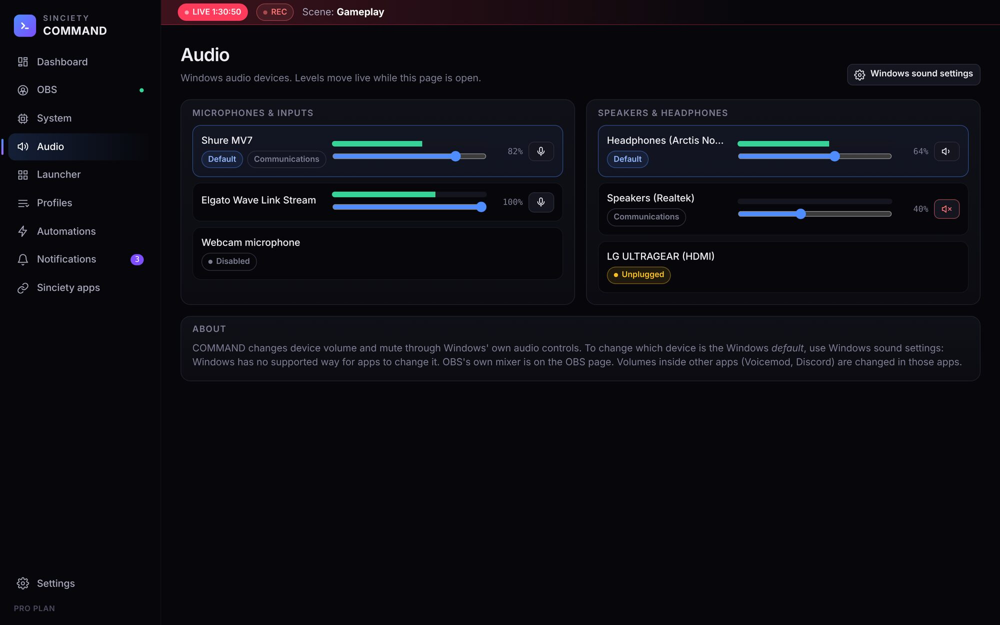
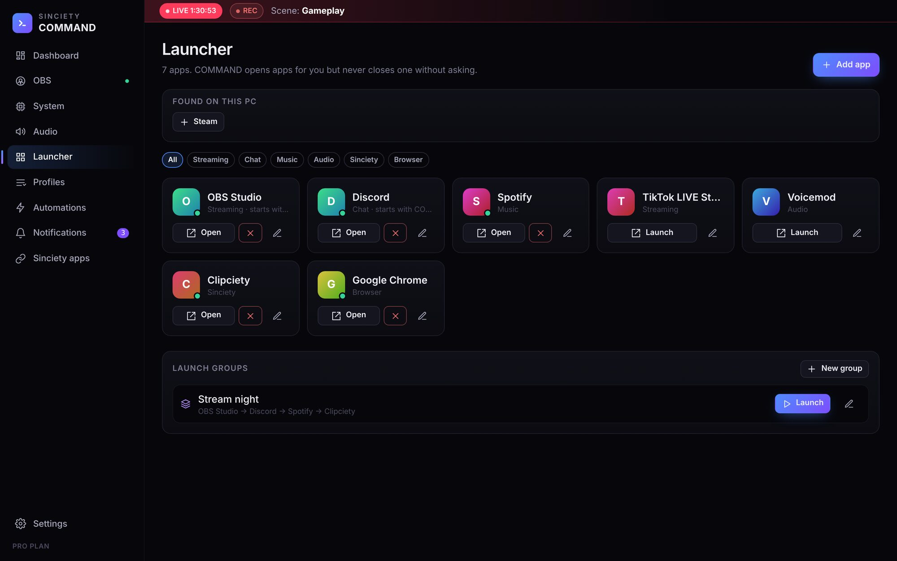
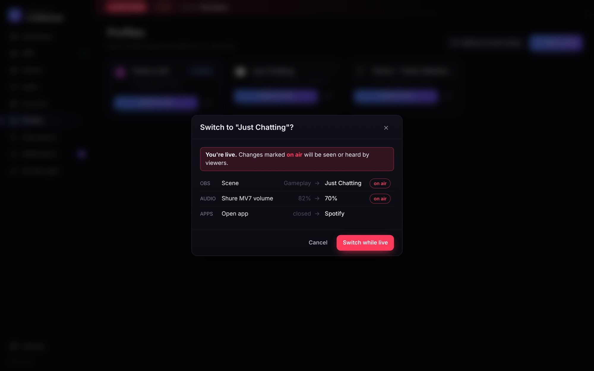
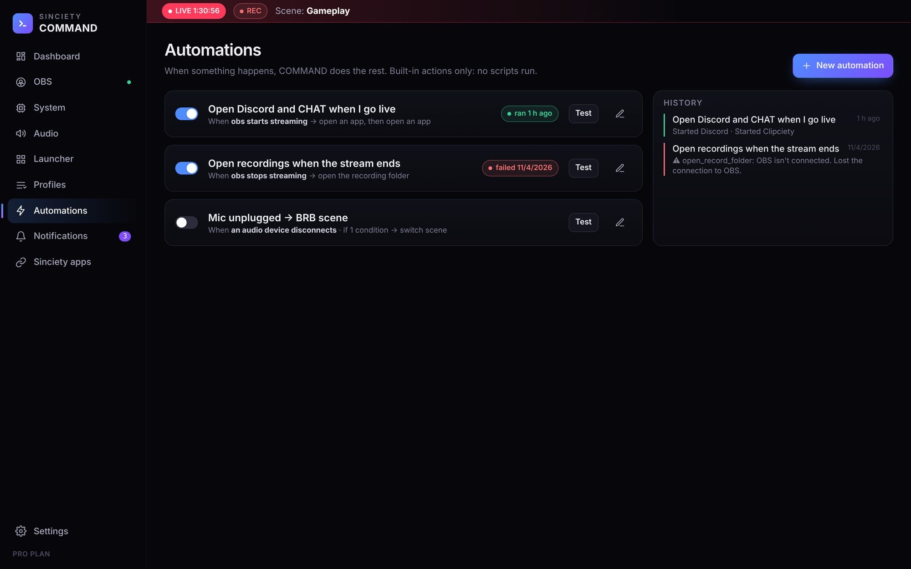

SincietyCOMMAND
Your whole stream in one control centre: OBS, your PC's performance, your mics and speakers, the apps you stream with, setups you can switch in one click, and automations that handle the routine for you.

Stop switching windows
Everything you'd normally juggle across five programs, in one place that's easy to use mid-stream.
Run OBS without alt-tabbing
COMMAND connects to OBS through its built-in WebSocket server and reconnects by itself if OBS restarts.
- Start and stop streaming and recording; pause recordings
- Switch scenes, use studio mode, pick transitions
- Show or hide sources, mute and mix audio with live meters
- Bitrate, dropped frames and connection health while live

Know your PC can take it
CPU, GPU, RAM, VRAM, temperatures, network and disk, with graphs for the last 10 minutes and history for the last 24 hours. It only samples quickly while you're looking, so it doesn't steal frames from your game.
- Works with NVIDIA, AMD and Intel graphics
- Warnings before memory or CPU runs out
- See which apps are using the most

Every mic and speaker, one page
See every microphone, headset and speaker Windows knows about, which ones are the defaults, and how loud each is right now.
- Volume and mute for each device
- Live level meters
- An instant alert if your mic unplugs mid-stream

Open your whole setup in one click
Add OBS, TikTok LIVE Studio, Streamlabs, Discord, Spotify, Voicemod, your browser and anything else. COMMAND finds the common ones for you.
- Launch groups open your apps in order
- Open chosen apps whenever COMMAND starts
- See which apps are running, and close them only when you say so

Switch your whole setup safely
Save a profile for Twitch, TikTok, multistreaming, podcasts or recording-only: your scene, transition, sources, OBS and Windows audio levels, and the apps to open.
- Shows exactly what will change before it changes
- Asks first if viewers would see or hear the change while you're live

Let COMMAND do the routine stuff
"When I go live, open Discord and CHAT." "When the stream ends, open my recordings." "If my mic disconnects while live, switch to BRB."
- Triggers from OBS, your devices, your PC and Clipciety
- Conditions like "only while live" or "between 8 pm and 2 am"
- Built-in actions only, with no scripts. Every run is logged.

Built for the Sinciety apps
COMMAND connects to the other Sinciety apps on your PC. Each one also works on its own.
Clips
See new clips as they're saved, and press Clip it from COMMAND to save the last moments from OBS's replay buffer.
Chat
Your Twitch, YouTube and TikTok chat on the dashboard, plus alerts for cheers, subs and Super Chats.
Voices
Character text-to-speech and chat walkers run in Clipciety and switch on automatically when you go live.
Sinciety PULSE
Your text-to-speech queue, soundboard and voice activity in COMMAND, as soon as PULSE launches.
Free to start
COMMAND is free. One Sinciety subscription unlocks more in both COMMAND and Clipciety.
| Free | Plus with Creator | Premium with Pro & Studio | |
|---|---|---|---|
| OBS control, monitoring, audio, notifications | ✓ | ✓ | ✓ |
| Apps in the launcher | 8 | 30 | Unlimited |
| Profiles | 2 | 10 | Unlimited |
| Automations | 3 | 15 | Unlimited |
| Performance history | 1 hour | 24 hours | 24 hours |
| Clip it from COMMAND | – | ✓ | ✓ |
Subscribed to Clipciety, or have a creator code? COMMAND picks up the same licence from Clipciety automatically, or paste it into COMMAND → Settings.
Set up in two minutes
- Download and run the installer. It installs just for your Windows account, so no admin rights are needed, and keeps itself up to date.
- Connect OBS. In OBS 28 or newer, open Tools → WebSocket Server Settings and tick Enable WebSocket server. Click Show Connect Info and paste the password into COMMAND's OBS page.
- Add your apps. In COMMAND's Launcher, add the apps it found on your PC with one click, then group the ones you open every stream.
- Optional: open Clipciety to bring your chat, clips and voices into COMMAND.